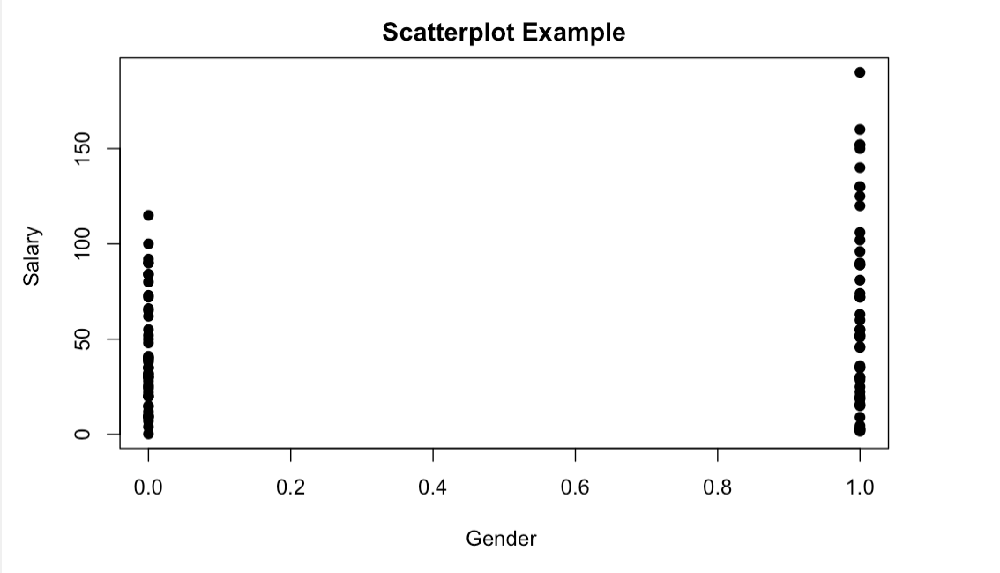

The Gender Wage Gap: Data and Info
The Equal pay act, passed in 1963, outlawed wage discrimination on the basis of sex. The law was put in place in order to help combat the gender pay gap. Although this law has grealty improved the gender wage gap and is often used in wage discrimination cases, women still earn less cents on the dollar than men do. The The data set below describes various variables that could be of interest such as Gender, Age, and Phd. The dataSet is a Lock5 data set that has been edited in order to fit the purposes of this website.
The data set below is a snapchot of the full data set. If one wishes to eveluate the full data set please refer to the lock 5 data set here.
| Salary (thousands) | Gender (1=M, 0=F) | Age (years) | Phd (1=y, 0=n) | ||
|---|---|---|---|---|---|
| a | 140 | 30 | 35.1 | 30 | 80 |
| b | 1 | 0 | 0 | 1 | 0 |
| c | 47 | 65 | 56 | 23 | 53 |
| d | 1 | 1 | 0 | 0 | 1 |
Data Visualization

Why does this data matter?
The data above suggests that men do indeed still out earn women. While both men and women both seem to have low paying jobs, far more men that women seem to have high paying ones. If we look more closely at the data, there are no women who are making more than $120,000 a year, while there are several men who are. While this data is hardly a representation of the entire american population it does still highlight a concerning trend that men outweigh women.
Conclusions
Tjis data indicates that according to this sample of men and women in the united States, that men still make more money than women. It does not indicate what positions these men and women are occupying and it is therefore imposiible to determine the exact cause for this descrepancy. This data is useful in taht in provides a starting point to analyze why and when women are paid less than men.Youtube
If you would like to know more about the data. Please check out my youtube video down below.
Link for futher resources with regards to the gender wage gap.